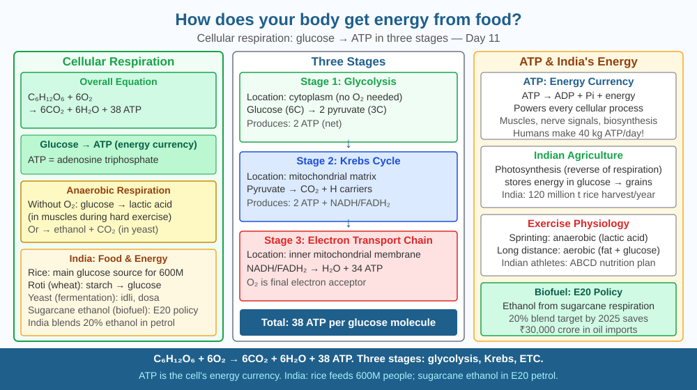

By the end of this lesson, you should be able to explain cellular respiration, describe aerobic vs anaerobic pathways, and predict what happens to energy production if oxygen supply is cut off.
You eat a chapati. Within hours, you can run a kilometre. How does wheat starch become the energy that contracts your muscles? The path from food to movement is one of the most elegant chains in biology.
Cellular respiration (aerobic): C₆H₁₂O₆ + 6O₂ → 6CO₂ + 6H₂O + 38 ATP Glucose + oxygen → carbon dioxide + water + ATP (energy currency)
Three stages: 1. Glycolysis (cytoplasm): Glucose (6C) split into 2 pyruvate (3C). Net gain: 2 ATP. No oxygen needed. 2. Krebs cycle (mitochondria matrix): Pyruvate broken down, CO₂ released, electron carriers (NADH, FADH₂) loaded. 3. Electron transport chain (inner mitochondrial membrane): NADH and FADH₂ donate electrons → proton gradient → ATP synthase spins → 34 ATP produced. Oxygen is the final electron acceptor → forms water.
ATP (adenosine triphosphate): The universal energy currency. Breaking ATP → ADP + Pᵢ releases ~30.5 kJ/mol of usable energy for muscle contraction, nerve signalling, biosynthesis.
Anaerobic respiration (no oxygen): Glycolysis only → 2 ATP + lactic acid (animals) or ethanol + CO₂ (yeast). 19× less efficient than aerobic. Causes muscle soreness.
Think of cellular respiration as a three-stage factory that extracts value from raw material:
The lactic acid burn in your legs during a sprint is the chemical signature of a factory running on emergency backup power.
The included SVG shows a single cell with three labelled compartments arranged left to right. The leftmost zone is the cytoplasm, coloured pale yellow, with glucose (a hexagon labelled C₆H₁₂O₆) being split into two pyruvate triangles labelled "2 ATP" above them — this is glycolysis. A curved arrow leads into a central mitochondrion drawn in cross-section: the matrix (inner blue zone) shows the Krebs cycle as a circular pathway with CO₂ bubbles rising upward and NADH/FADH₂ packets moving rightward. The inner membrane (darker blue, folded into cristae) is the rightmost zone, showing four protein complexes (I–IV) as vertical bars with an electron (e⁻) arrow flowing across them, protons (H⁺) pumping upward, and an ATP synthase wheel at the far right spinning to produce "34 ATP." An O₂ molecule enters at Complex IV and exits as H₂O. A dashed red pathway below the mitochondrion shows the anaerobic route: pyruvate → lactic acid, labelled "2 ATP only — emergency mode."

Malnutrition (India has ~190 million undernourished people) reduces cellular respiration efficiency — insufficient glucose limits ATP production in every cell. India's food fortification programme adds iron (needed for haemoglobin to carry oxygen to cells) and B vitamins (cofactors in Krebs cycle enzymes) to wheat flour and rice. The ₹350 crore nutrition supplementation programme depends on understanding cellular energy pathways. Sports physiology for Indian athletes (Olympics, cricket) optimises aerobic vs anaerobic training — athletes train to raise their lactate threshold, the point at which anaerobic respiration kicks in and lactic acid starts to accumulate.
Sprint 100 m as fast as you can, then rest. Notice burning legs and rapid breathing after you stop. During the sprint, muscles outpaced oxygen delivery → anaerobic → lactic acid accumulation → soreness. Rapid breathing afterward repays the "oxygen debt" — your body uses extra oxygen to break down lactic acid. Count your breaths per minute immediately after stopping, then again two minutes later. You will observe your breathing rate falling as the lactic acid clears. You have experienced the aerobic/anaerobic switch and the recovery process in real time.
ATP synthase is a molecular motor — literally a protein that rotates, using the flow of protons down a gradient to attach phosphate to ADP. It rotates at ~100 revolutions per second. Paul Boyer and John Walker shared the 1997 Nobel Prize in Chemistry for discovering this rotary mechanism. A single human cell contains approximately 1 billion ATP molecules, and each is recycled ~500 times per day. The human body synthesises its own weight in ATP every day — all through cellular respiration.
Predict: A mountaineer climbs above 5,000 m where oxygen concentration in the air falls by almost half. Using what you know about the three stages of respiration, predict which stage is most affected, what energy-related symptoms the mountaineer would experience, and why acclimatisation (staying at high altitude for several days before climbing higher) helps.
What process does the body use to release energy from glucose for cellular use?
Correct answer: A
Why is knowing the mechanism of energy release more useful than just knowing food gives energy?
Correct answer: A
If oxygen supply to cells were cut off, what would you predict about energy production?
Correct answer: C
A student runs a 400 m race and then a 42 km marathon on different days. After the 400 m, her legs burn intensely and she pants heavily for several minutes. After the marathon she is exhausted but has no burning sensation.
Using your knowledge of aerobic and anaerobic respiration, explain: (a) why the burning occurs after the sprint but not the marathon; (b) why she pants after the sprint even though the race is over; (c) why marathon training increases the number of mitochondria per muscle cell; and (d) what would happen to her marathon performance if a drug blocked the Krebs cycle enzymes in her muscle cells. Name at least two specific molecules in your answer.
Yeast and your muscle cells both switch to anaerobic respiration when oxygen runs out — but they produce completely different end products. Yeast produces ethanol and carbon dioxide (the chemistry behind bread rising and beer fermenting). Your muscles produce lactic acid. The difference is one enzyme step, and it has shaped human civilisation: every loaf of bread and every fermented drink in history has depended on yeast's particular version of emergency backup power.
Every movement, thought, and heartbeat runs on ATP made by cellular respiration — a three-stage factory that extracts 38 ATP from one glucose molecule using oxygen, but collapses to a 2-ATP emergency mode the moment oxygen runs out.